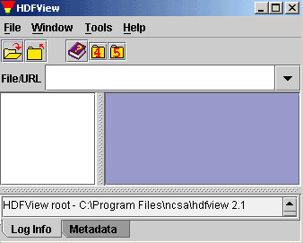

The HDFView is a visual tool for browsing and editing HDF4 and HDF5 files.
Using HDFView, you can
the User's Guide
To know how to implement HDFView modules, please read |
 |
To obtain the non-JRE distributions, see: HDFView User's Guide, Section 1.5, Installation
sh ./hdfview_install_{linux, solaris, irix}_{vm, novm}.bin
./hdfview
hdfview_install_macosx_novm.zip
hdfview_install_windows_vm.exe
Start -> programs -> THG HDFView 2.4 -> HDFView 2.4